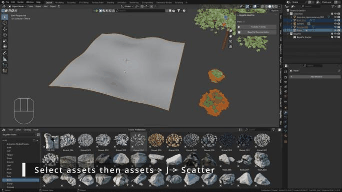

Scattering
BagaPie scatters objects on a mesh surface with Geometry Nodes. Each scatter is a layer: a set of assets with its own density, transforms, paint and mask. A surface can hold as many layers as you need.
Create a scatter layer
- Select the objects to scatter (meshes, curves or empties).
- Select the target surface last, so it is the active object.
- Press J and choose Scatter.

The assets are moved to a collection under BagaPie > BagaPie_Scatter. The first layer adds a BagaPie_Scatter modifier to the surface; each new scatter on the same surface adds a layer to it. The layers appear in the modifier stack at the top of the BagaPie panel. Use Rename Layer to keep them organized.
BagaPie sets a starting Distance Min from the size of your assets.
From the Asset Browser
Next to Scatter, Scatter Paint and Snap Asset, the Asset Browser button uses the assets selected in an open Asset Browser instead of objects in the scene.
- In the Asset Browser, browse a library (not All) and select one or more assets.
- In the viewport, select the surface.
- Press J and click Asset Browser next to the tool.
BagaPie imports the assets and creates the layer.
Asset Browser panel
The Asset Browser also has a BagaPie Scatter Tools panel in its sidebar (Asset tab). With a mesh selected in the viewport:
- Scatter Selection creates a layer from the selected assets.
- Add Assets to layer adds the selected assets to the active layer.
- The layer list, Rename Layer, Distance Min, Density Max, Scale Min / Max and Random Rot Z give you the essentials without leaving the Asset Browser.
- The layer content is listed below, with per-asset buttons: select, show as bounds, proxy, remove from layer.
Scatter Paint
Scatter Paint creates the same layer, then switches the surface to Weight Paint. Assets only appear where you paint.
| Control | Action |
|---|---|
| Paint ! | Enter paint mode for the active layer |
| Exit Paint Mode | Back to Object Mode |
| Add / Remove | Paint or erase |
| Clear Paint | Remove all painting from the layer |
| Invert Paint | Invert the painted area |
| Brush Profile | Softer or sharper brush falloff |
| Vertex Group | Each layer paints in its own vertex group; you can add, remove or swap groups |
Paint resolution depends on the mesh topology. Subdivide the surface if the painted areas look blocky.
Main settings
| Setting | Effect |
|---|---|
| Distance Min | Minimum space between instances; prevents collisions |
| Density Max | Maximum number of points per square meter. Keep it as low as possible for performance |
| % Viewport Display | Share of instances shown in the viewport. All instances are rendered |
| Align Normal | How much instances follow the surface normal |
| Seed | Changes the random distribution |
When collisions do not matter (grass, for example), set Distance Min to 0 and control the amount with Density Max only.
Tools
| Control | Action |
|---|---|
| Add Assets | Add assets to the active layer. Source: View 3D uses the selected objects; Source: Asset Browser uses the assets selected in the Asset Browser |
| Remove Assets | Remove the selected assets from the active layer. Select the assets, then the surface, choose the layer and click. Works from the 3D view only |
| Camera Culling | Assign an existing camera culling to this layer (see Effectors) |
| Layer Collection | The collection that holds the layer's assets |
| Proxy All | Add or remove a proxy on every asset of the layer |
| Select All Assets | Select the layer's assets |
Below, each asset of the layer has buttons to select it, display it as bounds (recommended for heavy scenes), toggle its proxy, or remove it from the layer.
Transform
Position, Rotation, Scale Min and Scale Max set the base transform of the instances. Randomize Transform adds random Position, Rotation and Scale with a min / max per axis. Random rotation on Z is the most common.
Mask
The texture mask controls where assets appear.
| Setting | Effect |
|---|---|
| Texture Mask | Enable the mask |
| Fac | Mask strength; 1 uses it fully |
| Scale | Size of the pattern |
| Offset | Spreads the mask more or less |
| Smooth | Softens the mask edges |
| Position | Moves the pattern |
| Invert Mask | Swap masked and unmasked areas |
Use the copy and paste buttons to reuse mask settings on another layer. Paste them on a second layer and invert the mask to place, for example, bushes between the rocks. Add a small offset to avoid overlaps. This is a quick way to break repetition.
Effectors
Point Effector and Camera Culling remove instances near objects or outside the camera view. See Effectors.
Safety features
Scattering a heavy asset on a large surface can slow Blender down. When you scatter, BagaPie estimates the result:
- If the estimated polycount (average asset polycount × instance count) exceeds the limit in the preferences, a dialog shows the approximate number of instances and lets you enable Use Proxy and lower Displayed Instances in %. If a camera culling exists, you can enable it too.
- Assets above the proxy polycount limit get a proxy automatically when Enable proxy by default is on.
- If the surface scale is not applied, BagaPie offers to Apply Scale. An unapplied scale changes the instance count and can deform instances.
All limits are in Preferences > Scattering Preferences:
| Preference | Default |
|---|---|
| Enable proxy by default | On |
| Minimum polycount for proxy | 100,000 |
| Use security features for scattering | On |
| Maximum polycount to trigger security features | 10,000,000 |
| Percentage of instances displayed in the viewport | 100 |
| Propose to apply the scale of the target | On |
| Use Camera Culling if available | On |
| Keep assets in scene | Off: when on, objects removed from a scatter collection are relinked to the scene collection |
Save as a preset
Save in GeoPack at the bottom of the scatter settings stores all layers of the surface as a reusable preset. See Scatter presets.
Apply and remove
- Apply (✓ in the modifier stack) converts the scatter to real geometry.
- Remove (−) deletes the layer.
Tips
- The scatter depends on the surface area. If the surface is animated or deformed, the distribution changes over time.
- If the render differs from the viewport, check that the surface does not change at render time (for example a different Subdivision level), and check % Viewport Display.
- Textures on the ground make scattering look much more natural.